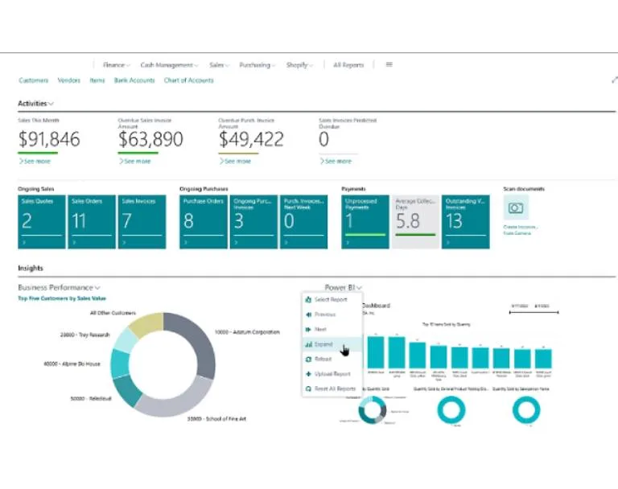
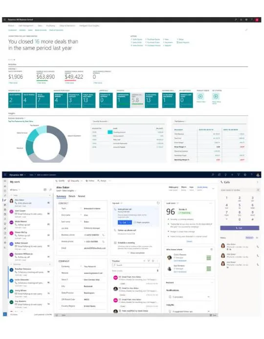
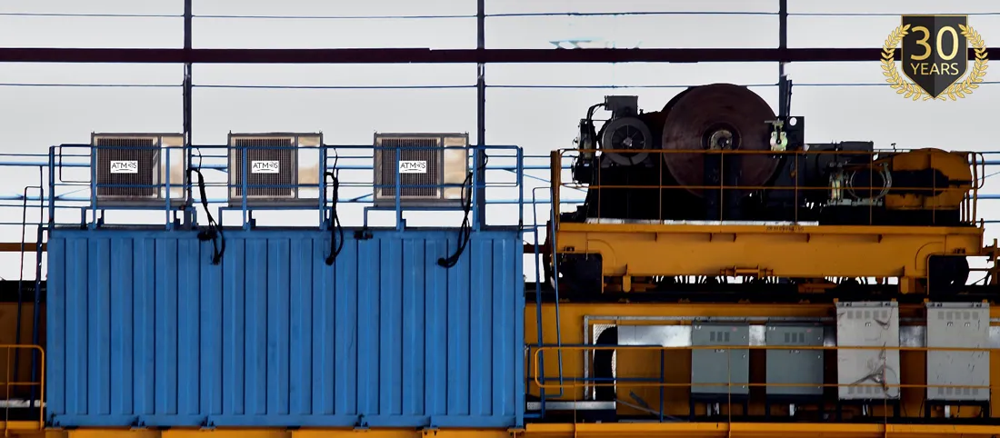

Implementing Microsoft Dynamics & M365 For Industrial Air Conditioning Company
ATMOS specializes in the field of severe duty air conditioning & refrigeration. The company is well recognized as the most trusted and reliable brand in steel plants, non-ferrous smelters, heavy equipment manufacturing & mines. Atmos (brand of Kabu Projects) provide solutions for ambient conditions upto 90 deg celsius in heat zone applications for steel mills, mines, non-ferrous metal processing, field operation cranes, coking, oil & gas etc. They provide complete turn-key solutions in the field of air-conditioning from design, manufacture and supply to installation, commissioning, after-sales-service & maintenance contracts.


Challenge & Solution
Atmos (Kabu Projects) was looking to implementing Dynamics Business Central within their organization. The project included migrating data from Atmos’s existing Accounting software to Dynamics Business Central platform. In addition to migrating client to Dynamics Business Central platform, we also helped the client migrate to Microsoft 365 and Azure platform.
Cloud Converge carefully planned how to move clients’ organization to Microsoft Dynamics Business Central, Microsoft 365 and Azure. We worked in close coordination with the client to understand their current setup, understand the system and services requirement and accordingly initiate the migration process.
Implementing Microsoft Dynamics Business Central : The most important part of the project was migrating the client data to Microsoft Dynamics Business Central. Our team had reviewed the existing application, identified data that would need to be migrated to business central, carried out the implementation phase and migration of data.
Setting up Microsoft 365 : We shared the advantages of using Microsoft 365 across the organization, migrated and trained the organization to use Microsoft 365.
Result
Moving to Microsoft Dynamics Business Central, Microsoft Azure and M365 brought big benefits for Atmos (Kabu Projects). Atmos (Kabu Projects) was able to take advantage of the robust solution which helped them streamline operations, enhance efficiency, and foster growth. For them, harnessing the power of Microsoft Dynamics Business Central, Microsoft Azure, and M365 proved to be a transformative strategy, propelling their business to new heights.
Seamless Integration with Microsoft Dynamics Business Central: At the heart of our client’s success story lies Microsoft Dynamics Business Central, a comprehensive enterprise resource planning (ERP) solution. By implementing Business Central, Atmos gained unparalleled visibility into their financials, supply chain, sales, and operations. With features tailored to their industry-specific needs, they experienced streamlined processes, reduced manual errors, and improved decision-making capabilities.
Scalability and Flexibility with Microsoft Azure: To complement the capabilities of Business Central, our client embraced the scalability and flexibility of Microsoft Azure, a cloud computing platform. By migrating critical workloads to Azure, they unlocked a wealth of benefits, including enhanced agility, cost savings, and improved performance. Whether managing peak workloads during seasonal spikes or expanding into new markets, Azure provided the infrastructure needed to support their evolving business requirements.
Empowering Collaboration with Microsoft 365: Collaboration lies at the core of modern business, and our client recognized the importance of empowering their workforce with the right tools. Microsoft 365 emerged as the solution of choice, offering a suite of productivity applications designed to foster collaboration, communication, and creativity. From seamless file sharing and real-time collaboration to advanced communication tools, M365 facilitated efficient teamwork across departments and locations.
Driving Business Growth and Innovation: By leveraging the synergies between Microsoft Dynamics Business Central, Azure, and M365, our client achieved more than operational efficiency; they unlocked the potential for innovation and growth. With a solid foundation in place, they could focus their energies on driving strategic initiatives, exploring new market opportunities, and delivering unparalleled value to their customers.

Conclusion
In an increasingly digital world, the strategic integration of technology can be a game-changer for businesses. For Atmos, harnessing the combined power of Microsoft Dynamics Business Central, Azure, and M365 proved to be the catalyst for success. From streamlining operations and enhancing collaboration to fostering innovation and driving growth, the synergy between these platforms enabled our client to navigate challenges with confidence and emerge as a leader in their industry.